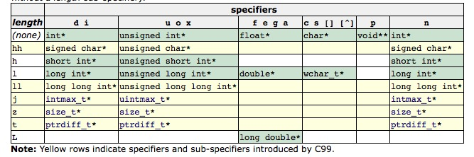
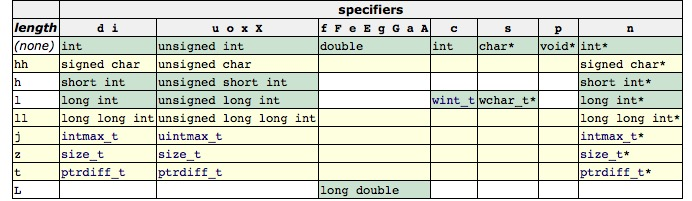

C 语言中函数 scanf 和 printf
在C语言中最常用的函数应该就是scanf，printf吧。对于大量输入输出时C++也常用scanf和print代替cin和cout。然而我们学习C语言最先接触的scanf和printf其实我们并不完全了解。
scanf
按照 C++ reference 的介绍，scanf 的原型为1
2int scanf ( const char * format, ... );
format = %[*][width][length]specifier

其中上面的[*]表示输入的东西被忽略，[width] 表示最大输入长度，而 [length] 表示是类型的一种延伸，可以是 hh, h, l, ll, j, z, t, L 中的一种。例如1
2
3
4
5
6
7
8
9
10#include <cstdio>
/*------ Welcome to visit blog of dna049: http://dna049.com ------*/
int main(){
long n;
scanf("%3ld",&n);
printf("%ld\n",n);
return 0;
}
// input : 12345
// output: 123
specifier 是必选项 它可以是 $i,d,u,o,x,f,e,g,a,c,s,p,n,%$。还有两个特殊的 [characters]和[^characters]。上面的参数就不过多说了。特别要强调的是这两个特殊的。
[characters] 表示只接受 [characters] 中的字符；[^characters] 表示只不接受 [characters] 中的字符。例如：
1 | #include <cstdio> |
特别注意
在使用下面语句进行输入时遇到空白符(whitespace)会结束输入的。1
scanf("%s",str);
whitespace可以使用int isspace ( int c );判断。有这些字符有：
scanf典型例子
有时我们明确知道输入为 $(a,b)$ 这种类型，我们可以这样做
1
scanf("(%d,%d)",&a,&b);
输入字符包含除回车之外的字符
1
scanf("%[^\n]",str);
只输入小写字母和数字
1
scanf("%[0-9a-z]",str);
scanf 返回值
- 正整数：表示正确输入参数的个数
- 0：输入不匹配，无法正确输入任何值
- EOF（一般为-1）为读到文件结尾或在terminal中输入了 ctrl + z
printf
print 的原型为1
2int printf ( const char * format, ... );
%[flags][width][.precision][length]specifier

specifier 和 scanf 的类似就不多说了。[length] [width]同理。[.precision] 一看就懂
[flags] 可选有 -,+,#,0。其中
- - 表示在给定宽度内向左靠齐。默认向右见下例子
- + 表示即使是非负数，前面也要加正号。
- # 目前不清楚用法。
- 0 就是在不足宽度的时候补0
1 | double a = 123.45678; |
神器：sscanf 和 sprintf
不多说了，举个例子说明问题吧1
2
3
4
5
6
7
8
9
10
11
12
13
14
15
16
17
18#include<cstdio>
int main(){
/* sscanf example */
char sentence []="Rudolph is 12 years old";
char str [20];
int i;
sscanf (sentence,"%s %*s %d",str,&i);
printf ("%s -> %d\n",str,i);
/* sprintf example */
char buffer [50];
int n, a=5, b=3;
n=sprintf (buffer, "%d plus %d is %d", a, b, a+b);
printf ("[%s] is a string %d chars long\n",buffer,n);
return 0;
}
// output:
// Rudolph -> 12
// [5 plus 3 is 8] is a string 13 chars long
最后说一个比较诡异但是可以理解的事情
sacnf 输入 float 和 double 时分别用 %f,%lf。
printf 输出 float 和 double 时用的都是 %f。